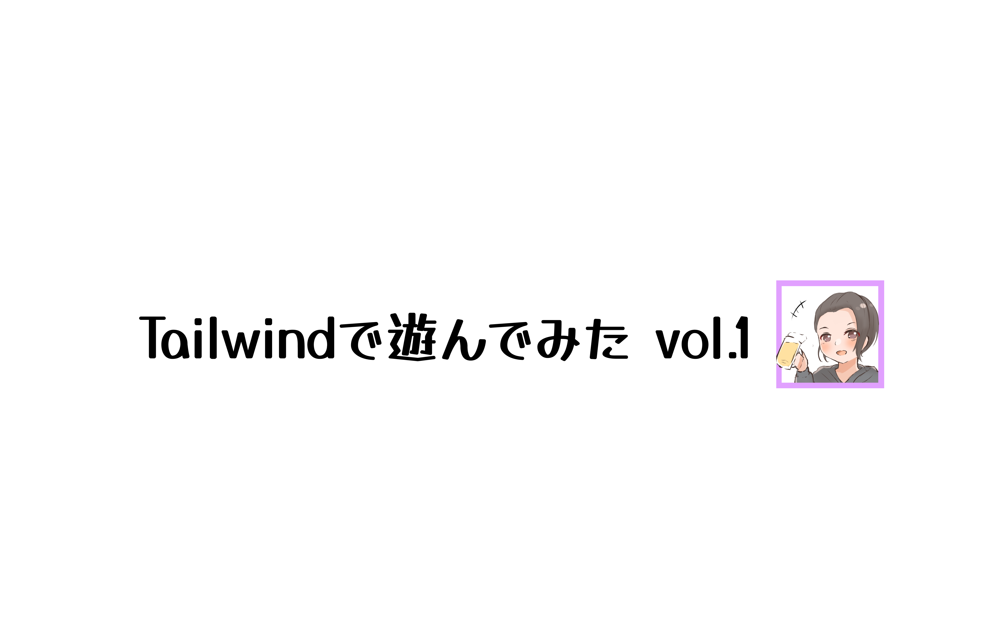

BLOG
COMPANY
PHOTO

龍ちゃんです( *´艸｀)
どもども！訪れていただいてありがとうございます。
今回は、朝の一時間企画で、Tailwindコーディングを行った結果を公開しています。
実際のコーディング時間は30分程度ですね。デザインを決めるよりも、何のサイトを作ろうか悩んでいたら時間がたってしまいました。
こちらのページは、Tailwindで遊んでみた
vol.1に伴って作成しました。
もしよろしかったら、そちらのページものぞいてみてね。何なら、BlOG・COMPANY・PHOTOそれぞれを押していただいたら、飛びますよ"(-""-)"
シリーズにしたい気持ちを抱えて、朝のコーディングを終了しますね。ではまた！
